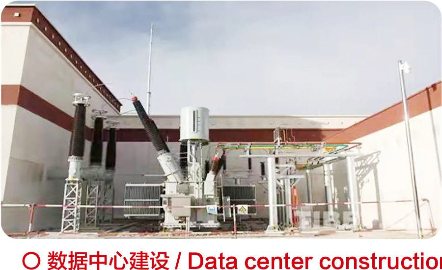

Nigeria · Utility Grid
Atlantic Industrial Park 132 kV Substation
132 kV industrial-park substation reference recorded in Tianyu's project library.
- Country
- Nigeria
- Scale
- 132 kV
- Application
- Utility Grid

Discuss a similar project.
Share the application, rating and destination, and engineering will review the matching product platform.